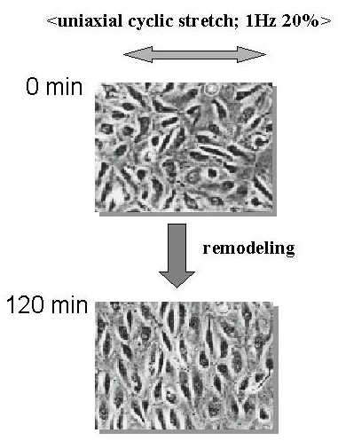
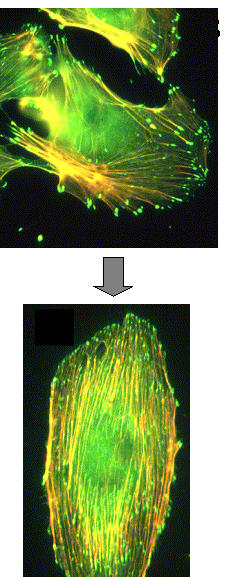

Masahiro Sokabe
Department of Physiology, Nagoya University Graduate Scool of MedicineThe Goal of this study is to understand how intracellular signaling molecules are integrated to produce proper cell responses to external stimuli. We particularly focus on the molecular signaling in an adaptive morphological response to mechanical stimuli, in other words, how the spatial pattern of mechanical stimuli are transformed into cell shape. To this end, we conduct both experimental and theoretical approaches, the former would provide us information on what types of molecules and signaling networks are involved, and the latter how the networks are regulated and integrated.
Cells seem to recognize spatiotemporal pattern of external stimuli. For example endothelial cells subjected to uniaxial cyclic stretch remodel their shape from irregular one to spindle like one with aligning their longitude perpendicular to the stretch axis (Fig.1). When subjected to a sustained uniaxial stretch the cells align their longitude parallel to the axis. The first question is how mechano-receptors on the cell membrane detect and transduce spatiotemporal pattern of mechanical stimuli, and second how the transduced signals are transformed into their shape. Our first goal is to identify mechano-receptors and their downstream signaling networks. So far we could identify two putative mechano-receptors, a stretch activated (SA) ion channel and the integrin (an adhesion molecule). Mechanical information transduced by these receptors may be integrated at the focal adhesion and some structural changes would be initiated. Recently we found that actin fibers (orange colored strand like structures in Fig.2) originated from the focal adhesion (green colored spots) change their orientation from random one to aligned one perpendicular to the stretch axis. We are now investigating how actin fibers can convert the orientation of mechanical stimuli into their orientation. Based on expected results we will construct a molecular network model to explain the remodeling process. The unique aspect of this study is that it will provide a model how intracellular chemical reactions are spatially regulated, which is essentially important to understand the mechanisms of cell migration and synaptogenesis in the brain.
|
 Fig.1 Stretch-induced remodeling |
 Fig.2 Stretch-dependent remodeling of actin fiber |